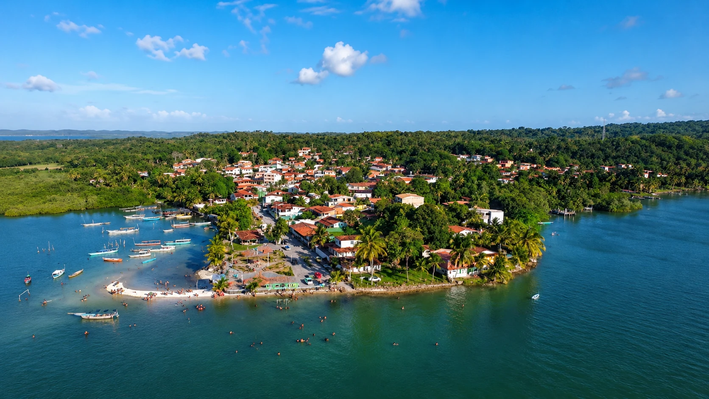
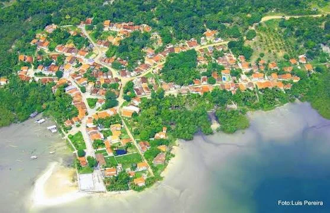

Contracosta de Vera Cruz · Baía de Todos-os-Santos
Matarandiba
Uma vila onde conchas pavimentam memórias, a maré organiza o trabalho e os causos atravessam gerações como pequenas embarcações de palavras.
Entre peixes, conchas e parentesco
01
02
03
Uma vila pequena na geografia, enorme na memória
Matarandiba é uma comunidade tradicional de pescadores e marisqueiras situada na contracosta da Ilha de Itaparica, em Vera Cruz. Sua história é construída na relação entre mar, mangue, trabalho, parentesco e cultura oral.
Pesquisas realizadas na comunidade descrevem famílias ligadas por fortes laços de parentesco, mulheres que aprendem a mariscar ainda jovens e pescadores que transformam peixes, visagens e acontecimentos do mar em narrativas compartilhadas.
Vila pesqueiraBarcos, canoas, redes, mariscos e leitura das marés.
Comunidade de memóriaHistórias, festas e objetos são preservados pelos próprios moradores.
Território em transformaçãoA industrialização alterou acessos, paisagens e relações de trabalho.

O tempo não corre só no relógio
Lua, vazante, enchente e amplitude das águas organizam o trabalho cotidiano.
Os causos são documentos vivos
As narrativas misturam lembrança, imaginação, valores e lugares reconhecíveis.
A paisagem também é território
Praia, mangue, restinga e porto são espaços de moradia e trabalho.
Por que se chama Matarandiba?
A explicação mais consistente encontrada em estudos toponímicos relaciona o nome a uma planta e à ideia de abundância.
Matara + ndiba
Matara seria uma redução de matarânna, nome associado a uma planta da família Renealmia sylvestris, também chamada de cardamomo-da-terra em algumas referências.
O elemento -ndiba indica abundância. Assim, Matarandiba pode ser interpretada como “lugar onde há muitas mataranas”.
Matara+-ndiba→Mataranas em abundância
Tamarandiva e Ilha dos Burgos
Em documentos da colonização, o território aparece associado à forma Tamarandiva, presente no nome da antiga Capitania de Itaparica e Tamarandiva.
O historiador Ubaldo Osório também registrou que a vila foi chamada de Ilha dos Burgos, por ter pertencido aos descendentes do ouvidor Cristóvão de Burgos.
Da ilha isolada à organização comunitária
Uma história feita de travessias
Até a década de 1970, Matarandiba era uma ilhota separada da Ilha de Itaparica. Pessoas, alimentos e notícias chegavam principalmente por navios e saveiros.
A chegada da exploração industrial de sal-gema modificou profundamente o território. Um aterro criou ligação terrestre com Itaparica, facilitando o acesso, mas moradores também relacionaram essa transformação a mudanças na pesca e no ambiente.
Em 2008, a mobilização local deu origem à Associação Sociocultural de Matarandiba, a ASCOMAT, voltada à valorização da identidade, das manifestações culturais e da memória.
Itaparica e Tamarandiva
A ilha aparece nos registros da antiga capitania donatária criada no período colonial.
Entrada e saída pelas águas
Navios e saveiros ligavam a vila a Salvador e a outros pontos da Baía.
Industrialização e aterro
A exploração de sal-gema e a ligação terrestre alteraram o cotidiano e a paisagem.
Criação da ASCOMAT
A associação passou a articular memória, cultura, leitura e organização comunitária.
Pesquisa sobre memória social
Estudo etnográfico analisou a construção de um memorial comunitário na vila.
Colapso do terreno e estudos técnicos
O surgimento de uma grande cavidade motivou relatórios, monitoramento e reivindicações da comunidade.
Maré, mariscagem e conhecimento do corpo
Em Matarandiba, a maré não é apenas água em movimento. É calendário, lugar de trabalho, caminho, memória e relação de parentesco.
≈
ChumbinhoAbundante, mas exige horas de coleta e beneficiamento.
Ostra e sururuEncontrados em áreas de mangue e maré.
Aratu e caranguejoExigem leitura do comportamento e do ambiente.
Peguari e siriDependem de técnicas específicas e diferentes pontos de captura.
O que é a “maré morta”?
A expressão local descreve um período de menor amplitude das águas, ligado às fases de quarto crescente e quarto minguante. A maré não enche totalmente nem esvazia por completo, deixando parte da restinga descoberta.
Para a pesca e a mariscagem, isso pode significar menor rendimento. A maré funciona como uma medida do tempo e indica quando ir, quando voltar e quais espécies podem ser encontradas.
Aprender acompanhando
Muitas marisqueiras começaram ainda meninas, observando mães e avós. O saber é aprendido no gesto, na posição do corpo, na escolha do lugar e na repetição.
A raiz da mãe
A pesquisa etnográfica mostra como mulheres criaram filhos na maré e transmitiram conhecimentos, responsabilidades e vínculos familiares por meio do trabalho.
Trabalho coletivo
Depois da coleta, familiares, amigas e comadres podem se reunir para separar o marisco das conchas. O quintal vira oficina, conversa e rede de ajuda.
Festas, sambas e personagens que voltam todo ano
As manifestações de Matarandiba misturam religião, brincadeira, teatro, música e participação comunitária. A tradição não fica parada: ela se adapta, ganha novos registros e conversa com televisão, internet e redes sociais.
Voa Voa Maria
O grupo de mulheres reúne canto, dança e memória. O samba “Eu vi dizer” funciona como um mapa afetivo das festas e costumes da comunidade.
Zé de Vale
Romance tradicional encenado com canto, personagens, cenário e participação da praça. A versão local incorpora referências ao canavial, à família e à religiosidade.
Terno de Reis e São Gonçalo
Cortejos, roupas, chapéus coloridos, cantos de porta em porta e devoção aproximam fé popular e convivência comunitária.
Boi Janeiro
Versão local do boi festivo, tradicionalmente ligada ao mês de janeiro, com vaqueiro, baliza, música e participação de moradores.
Aruê
Festa de Ano-Novo descrita pelos moradores como forma de saudar o tempo que chega e despedir o ano que termina.
ASCOMAT e memorial comunitário
A associação reúne documentos, objetos, imagens e lembranças para que acontecimentos cotidianos e manifestações não desapareçam no esquecimento.
Memória como direito
Conhecer a ASCOMAT
Guardar não significa congelar
O memorial comunitário foi pensado para registrar acontecimentos valorizados pelos moradores, a vida cotidiana, os lugares, o trabalho, o lazer e as relações. A memória é reconstruída no presente, escolhendo o que deve ser lembrado e transmitido.
Causos e lendas de Matarandiba
Os causos são narrativas contadas como experiências verdadeiras ou muito próximas de quem narra. Eles caminham na beira fina entre acontecimento, mistério e imaginação.
Os Pintinhos de Ouro
D. Cidra contou que seu pai viu, perto de uma antiga mina, uma galinha cercada por pintinhos amarelos. Quando tentou alcançá-los, tudo desapareceu. A avó explicou: aqueles pintinhos seriam de ouro.
O causo liga mina, riqueza, desejo e paisagem local.A Caipora
Em um relato coletado na vila, uma menina e a avó se perderam ao voltar de Jiribatuba, mesmo conhecendo a região. A avó dizia que a Caipora havia embaralhado o caminho.
A narrativa conecta Matarandiba, Matange, Jiribatuba e os mistérios da mata.O Facho das Comadres
Pescadores e moradores narram dois fachos de fogo que se enfrentam sobre o mar. Os mais velhos dizem que seriam duas comadres que brigavam em vida e continuaram discutindo depois da morte.
O causo aproxima mar, parentesco, memória e presença dos mortos.Sal-gema, aterro e o colapso de 2018
A mineração introduziu empregos, infraestrutura e novas conexões, mas também transformou a relação da comunidade com seu território e gerou preocupações ambientais.
2018
Década de 1960O depósito de sal-gema foi identificado em estudos da Petrobras.
1976O relatório registra a perfuração do primeiro poço.
1977Começou a transferência de salmoura por salmoroduto até Aratu.
2018A comunidade solicitou apoio técnico e avaliação independente de risco.
Um evento que exigiu investigação técnica
Em 30 de maio de 2018, foi identificada uma cavidade no extremo norte da ilha. O relatório preliminar do Serviço Geológico do Brasil registrou dimensões iniciais próximas de 70 metros no eixo maior, 29 metros no eixo menor e 45 metros de profundidade.
O episódio mobilizou órgãos públicos, técnicos, empresa e comunidade. O relatório foi elaborado para investigar causas, avaliar riscos e recomendar monitoramento.
Paisagens da vila
As fotografias mostram águas rasas, mangue, pesca e diferentes maneiras de enxergar a pequena ilha.
Registro audiovisual
Um passeio de trinta segundos
Vídeo enviado para o projeto mostrando paisagens e detalhes da comunidade.
Detalhes que ajudam a ler a comunidade
Já foi uma ilhota separada
Antes do aterro da década de 1970, a entrada e a saída dependiam principalmente das águas.
As conchas estão por toda parte
Pesquisas registraram conchas em calçamentos, paredes, artesanato e na própria atividade econômica.
A moeda local se chama Concha
O Banco Comunitário Ilhamar criou uma moeda social associada à economia solidária da vila.
Barra Falsa aparece nas memórias de passeio
Textos sobre a vila citam dunas claras, águas transparentes e caminhadas ecológicas.
A fonte do Tororó integra a geografia afetiva
Fontes foram lugares de banho, água, encontro e lembranças da infância.
O samba mirim ajuda a continuar a tradição
Crianças e jovens participam de manifestações e aprendem pela presença e pela performance.
A voz convive com a tecnologia
TV, vídeo e redes sociais passaram a registrar e divulgar práticas antes transmitidas apenas ao vivo.
A memória é também uma forma de resistência
A organização comunitária transforma fotografias, objetos, festas e relatos em instrumentos de pertencimento e defesa do território.
Visite com escuta e cuidado
A vila não é cenário vazio
Matarandiba é território de moradia, trabalho, cultura e memória. Quem visita precisa reconhecer os ritmos e os limites da comunidade.
Conecta Vera Cruz · Memória coletiva
Vozes de Matarandiba
Você conhece um causo, uma festa, um nome antigo de lugar, uma receita ou uma história sobre a vila? Compartilhe sua lembrança.
Compartilhe uma memória
Conte algo que você viveu, ouviu de moradores antigos ou considera importante preservar.
Evite divulgar telefone, endereço ou outros dados pessoais.
Memórias da comunidade
0 publicações
Histórias compartilhadas
Pesquisa, memória e transparência
Fontes da página
Os textos foram resumidos e adaptados para leitura pública, sem transformar lendas em fatos comprovados.
Retrato da vila, transformações territoriais e narrativas dos Pintinhos de Ouro e da Caipora.
Manifestações culturais, Zé de Vale, Voa Voa Maria, Aruê, Boi Janeiro e relações com a mídia.
Mariscagem, parentesco, corpo, fases da maré e o causo dos fachos das comadres.
Caracterização da ilha, histórico da mineração e avaliação preliminar da área colapsada.
Reconstrução da memória coletiva, criação da ASCOMAT e formação do memorial comunitário.
Abrir reportagemInterpretação do nome Matarandiba como matara acrescido do sufixo de abundância -ndiba.
Contexto colonial e registro histórico da forma Tamarandiva.
Consultar no Repositório da UFBA